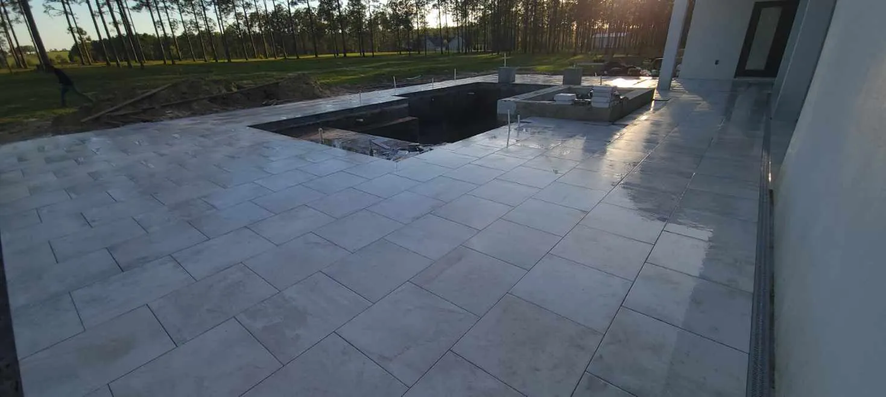
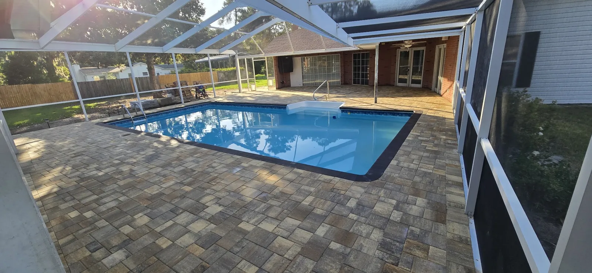
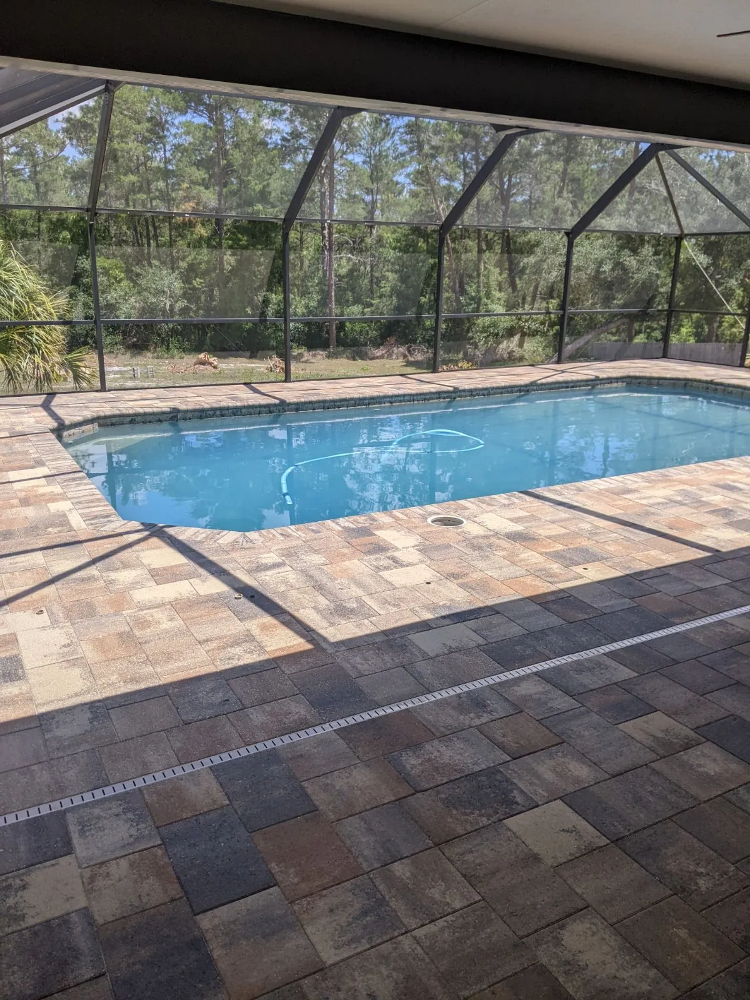
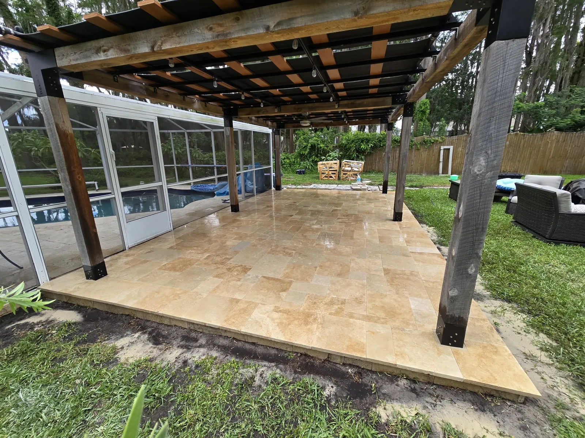
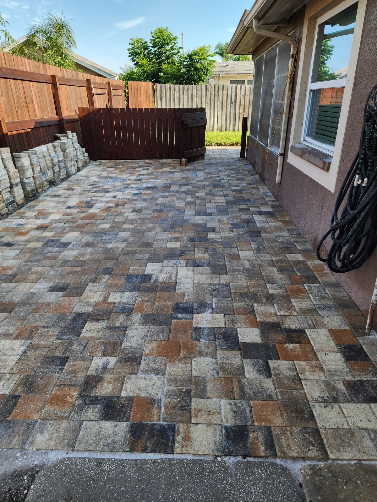
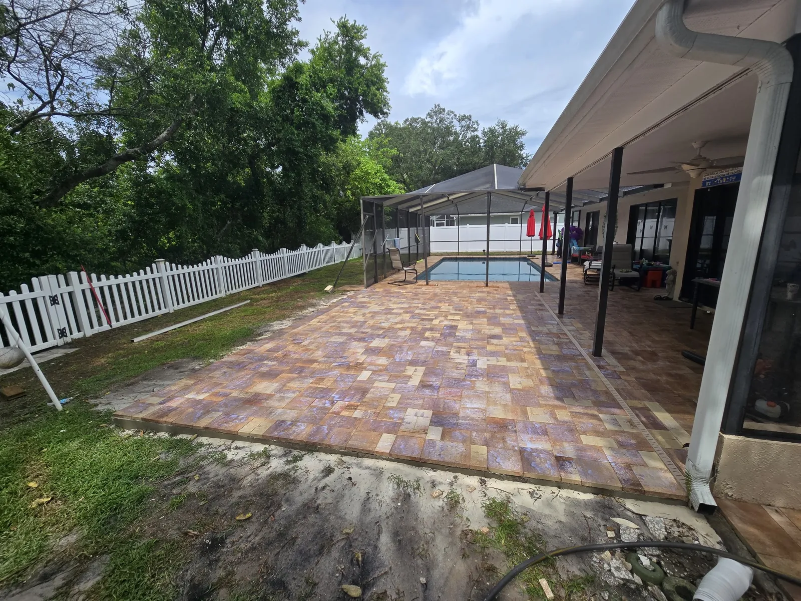
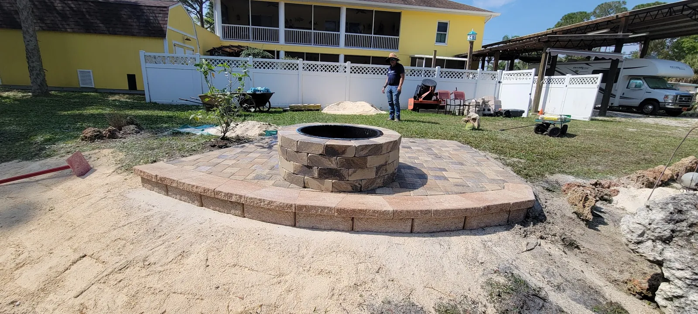
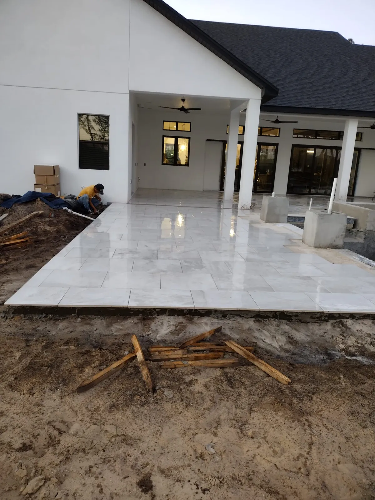
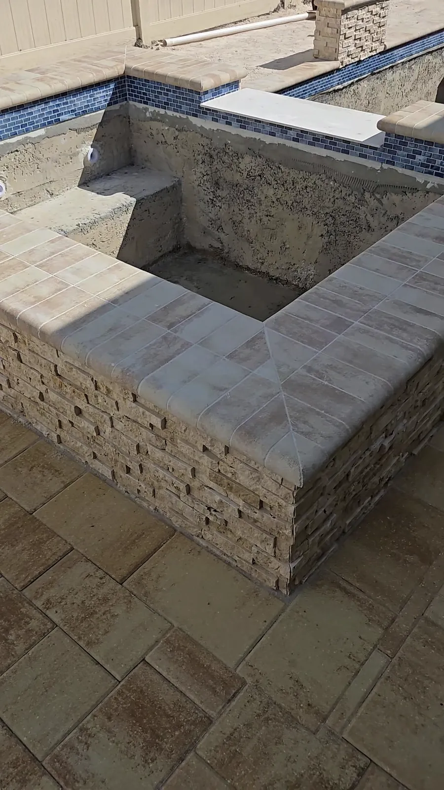
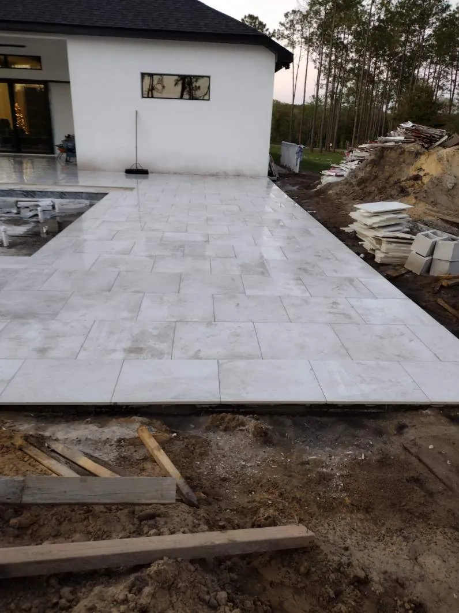

Coastal Edge Outdoor Services · Pinellas County
Patios, driveways and pool decks across Pinellas County. Scroll to watch one go in, layer by layer.
Recent work
Every photo here is a Coastal Edge job. Pool decks, patios, a fire pit, a driveway-sized patio going down at a new build.









Pick your pavers
Tap a pattern and a color blend and watch it get laid. Herringbone interlocks tightest, which is why we use it under cars.
Restoration and sealing
Clean, re-sand, reset what moved, and seal. Pinellas sun and salt air wash the joint sand out faster than inland, so most pavers here want it every two to three years.
Pressure wash, kill the algae and mildew in the joints, lift the stains that will lift.
Fresh polymeric sand in every joint. Pavers that sank or shifted come up and go back level.
A color-enhancing sealer that locks the sand in and brings the color back. Pool decks and full-sun areas first.
Price it in seconds
Pick the project and the size. The range updates as you go. Brent measures in person before any number is final.
Sample pricing for this preview. Coastal Edge sets the real numbers, and an on-site measure sets the final price.
"I called them for an estimate to reseal my travertine deck, and the pricing was very fair. They showed up on time, were professional from start to finish, and my deck looks amazing. Brent and his crew were top notch throughout the whole process."
"Professional, reliable, and did an incredible job. Our backyard oasis turned out even better than we imagined. This is the second time we've used them and it won't be the last."
"Brent is top notch at his craft and passionate about fulfilling his clients wishes for home improvement. He's up before the sun and completes high quality work."
"Brent's team is first class all the way! Quick, responsive and do things right the first time. Highly recommend for paver work."
What we do
Built on a compacted base, laid in the pattern you picked, finished with a border if you want one.
Paver drivewaysA deeper base and an interlocking pattern, because it has to carry a truck for years.
Paver pool decksCoping, deck, drainage. Travertine and shell stone stay cooler underfoot.
Paver restorationSunken, shifted or weedy pavers come up, the base gets fixed, and they go back level.
Paver strippingOld, milky or peeling sealer stripped off so the new coat bonds and the color comes back.
Paver sealingClean, re-sand, seal. Every two to three years in Pinellas, pool decks sooner.
Service area
From Tarpon Springs down to St. Pete, and across the bridges when the job is right.
Give a new install 60 to 90 days first so the pavers finish curing and any efflorescence works its way out. Then seal.
It sets up in the joints, so the pavers lock together and the sand stops washing out. It also keeps weeds and ants from taking hold.
Compacted soil, several inches of compacted base rock, one inch of concrete sand, then the pavers and an edge restraint. Scroll back to the top to watch it go in.
Yes. A sunken corner, a few lifted pavers at the edge of a driveway, a gate post that pushed a walkway up. Send a photo with your request.
Free on-site estimate
Call, or send the basics and a photo. He measures in person and you get one number, in writing.
Call (727) 600-7192Coastal Edge Outdoor Services LLC · Pinellas County, Florida
Free on-site estimate